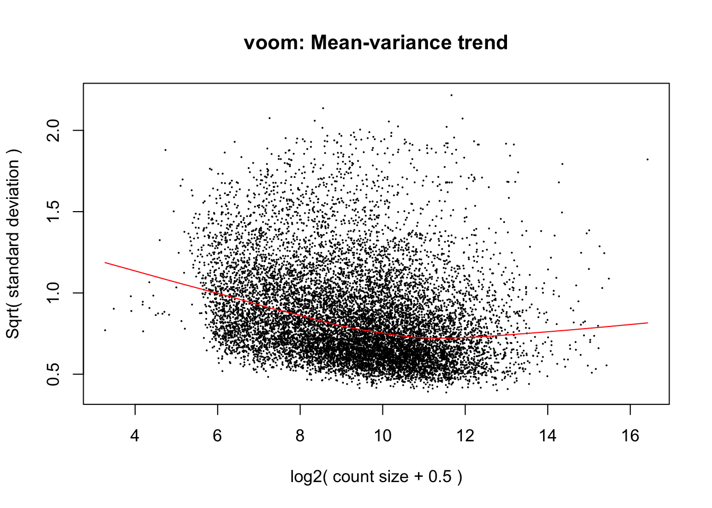

More_lenient_overlaps
Lauren Blake
May 30, 2018
1 P value cutoff
# Set FDR level
FDR_level <- 0.01
FSR_level <- 0.01
# Combine the human ASH results
combined_human <- cbind(results[["H_HeartvLi"]]$adj.P.Val, results[["H_HeartvLi"]]$logFC, results[["H_HeartvLu"]]$adj.P.Val, results[["H_HeartvLu"]]$logFC, results[["H_HeartvK"]]$adj.P.Val, results[["H_HeartvK"]]$logFC, results[["H_LivLu"]]$adj.P.Val, results[["H_LivLu"]]$logFC, results[["H_LivK"]]$adj.P.Val, results[["H_LivK"]]$logFC, results[["H_LuvK"]]$adj.P.Val, results[["H_LuvK"]]$logFC)
dim(combined_human)## [1] 12184 12rownames(combined_human) <- rownames(cpm_12184)
# Combine the chimp ASH results
combined_chimp <- cbind(results[["C_HeartvLi"]]$adj.P.Val, results[["C_HeartvLi"]]$logFC, results[["C_HeartvLu"]]$adj.P.Val, results[["C_HeartvLu"]]$logFC, results[["C_HeartvK"]]$adj.P.Val, results[["C_HeartvK"]]$logFC, results[["C_LivLu"]]$adj.P.Val, results[["C_LivLu"]]$logFC, results[["C_LivK"]]$adj.P.Val, results[["C_LivK"]]$logFC, results[["C_LuvK"]]$adj.P.Val, results[["C_LuvK"]]$logFC)
dim(combined_chimp)## [1] 12184 12rownames(combined_chimp) <- rownames(cpm_12184)
# Combine the rhesus ASH results
combined_rhesus <- cbind(results[["R_HeartvLi"]]$adj.P.Val, results[["R_HeartvLi"]]$logFC, results[["R_HeartvLu"]]$adj.P.Val, results[["R_HeartvLu"]]$logFC, results[["R_HeartvK"]]$adj.P.Val, results[["R_HeartvK"]]$logFC, results[["R_LivLu"]]$adj.P.Val, results[["R_LivLu"]]$logFC, results[["R_LivK"]]$adj.P.Val, results[["R_LivK"]]$logFC, results[["R_LuvK"]]$adj.P.Val, results[["R_LuvK"]]$logFC)
dim(combined_rhesus)## [1] 12184 12rownames(combined_rhesus) <- rownames(cpm_12184)
# Tissue specific- humans
spec_human_heart <- as.data.frame(combined_human[which(combined_human[,1] < FSR_level & combined_human[,3] < FSR_level & combined_human[,5] < FSR_level & combined_human[,7] > FSR_level & combined_human[,9] > FSR_level & combined_human[,11] > FSR_level),])
spec_human_kidney <- as.data.frame(combined_human[which(combined_human[,5] < FSR_level & combined_human[,9] < FSR_level & combined_human[,11] < FSR_level & combined_human[,1] > FSR_level & combined_human[,3] > FSR_level & combined_human[,7] > FSR_level),])
spec_human_liver <- as.data.frame(combined_human[which(combined_human[,1] < FSR_level & combined_human[,7] < FSR_level & combined_human[,9] < FSR_level & combined_human[,3] > FSR_level & combined_human[,5] > FSR_level & combined_human[,11] > FSR_level),])
spec_human_lung <- as.data.frame(combined_human[which(combined_human[,3] < FSR_level & combined_human[,7] < FSR_level & combined_human[,11] < FSR_level & combined_human[,1] > FSR_level & combined_human[,5] > FSR_level & combined_human[,9] > FSR_level),])
# Tissue specific- chimps
spec_chimp_heart <- as.data.frame(combined_chimp[which(combined_chimp[,1] < FSR_level & combined_chimp[,3] < FSR_level & combined_chimp[,5] < FSR_level & combined_chimp[,7] > FSR_level & combined_chimp[,9] > FSR_level & combined_chimp[,11] > FSR_level),])
spec_chimp_kidney <- as.data.frame(combined_chimp[which(combined_chimp[,5] < FSR_level & combined_chimp[,9] < FSR_level & combined_chimp[,11] < FSR_level & combined_chimp[,1] > FSR_level & combined_chimp[,3] > FSR_level & combined_chimp[,7] > FSR_level),])
spec_chimp_liver <- as.data.frame(combined_chimp[which(combined_chimp[,1] < FSR_level & combined_chimp[,7] < FSR_level & combined_chimp[,9] < FSR_level & combined_chimp[,3] > FSR_level & combined_chimp[,5] > FSR_level & combined_chimp[,11] > FSR_level),])
spec_chimp_lung <- as.data.frame(combined_chimp[which(combined_chimp[,3] < FSR_level & combined_chimp[,7] < FSR_level & combined_chimp[,11] < FSR_level & combined_chimp[,1] > FSR_level & combined_chimp[,5] > FSR_level & combined_chimp[,9] > FSR_level),])
# Tissue specific- rhesus
spec_rhesus_heart <- as.data.frame(combined_rhesus[which(combined_rhesus[,1] < FSR_level & combined_rhesus[,3] < FSR_level & combined_rhesus[,5] < FSR_level & combined_rhesus[,7] > FSR_level & combined_rhesus[,9] > FSR_level & combined_rhesus[,11] > FSR_level),])
spec_rhesus_kidney <- as.data.frame(combined_rhesus[which(combined_rhesus[,5] < FSR_level & combined_rhesus[,9] < FSR_level & combined_rhesus[,11] < FSR_level & combined_rhesus[,1] > FSR_level & combined_rhesus[,3] > FSR_level & combined_rhesus[,7] > FSR_level),])
spec_rhesus_liver <- as.data.frame(combined_rhesus[which(combined_rhesus[,1] < FSR_level & combined_rhesus[,7] < FSR_level & combined_rhesus[,9] < FSR_level & combined_rhesus[,3] > FSR_level & combined_rhesus[,5] > FSR_level & combined_rhesus[,11] > FSR_level),])
spec_rhesus_lung <- as.data.frame(combined_rhesus[which(combined_rhesus[,3] < FSR_level & combined_rhesus[,7] < FSR_level & combined_rhesus[,11] < FSR_level & combined_rhesus[,1] > FSR_level & combined_rhesus[,5] > FSR_level & combined_rhesus[,9] > FSR_level),])
intersect(spec_rhesus_heart, spec_rhesus_kidney)## data frame with 0 columns and 0 rowsintersect(spec_rhesus_heart, spec_rhesus_liver)## data frame with 0 columns and 0 rowsintersect(spec_rhesus_heart, spec_rhesus_lung)## data frame with 0 columns and 0 rowsintersect(spec_rhesus_kidney, spec_rhesus_liver)## data frame with 0 columns and 0 rowsintersect(spec_rhesus_kidney, spec_rhesus_lung)## data frame with 0 columns and 0 rowsintersect(spec_rhesus_liver, spec_rhesus_lung)## data frame with 0 columns and 0 rows1 P value cutoff figure
mylist <- list()
mylist[["Hu"]] <- rownames(spec_human_heart)
mylist[["Ch"]] <- rownames(spec_chimp_heart)
mylist[["Rh"]] <- rownames(spec_rhesus_heart)
# Make Venn Diagram
#dev.off()
svg("../data/check_heart_specific.svg", width = 7.2, height = 7.2)
heart_diagram <- venn.diagram(mylist, filename = NULL, category = c("Hu", "Ch", "Rh"), fill = pal[1:3], main.cex = 3, cat.cex = 3, cex=3.5, lty=1, height=2000, width=2000, fontfamily = "sans", cat.fontfamily = "sans", main.fontfamily = "sans", cat.fontface = "bold", main.fontface = "bold", cat.dist = 0.05)
grid.draw(heart_diagram)
dev.off()## quartz_off_screen
## 2# 2 P value - human
FSR_level <- 0.01
spec_human_heart_01 <- as.data.frame(combined_human[which(combined_human[,1] < FSR_level & combined_human[,3] < FSR_level & combined_human[,5] < FSR_level & combined_human[,7] > FSR_level & combined_human[,9] > FSR_level & combined_human[,11] > FSR_level),])
spec_chimp_heart_01 <- as.data.frame(combined_chimp[which(combined_chimp[,1] < FSR_level & combined_chimp[,3] < FSR_level & combined_chimp[,5] < FSR_level & combined_chimp[,7] > FSR_level & combined_chimp[,9] > FSR_level & combined_chimp[,11] > FSR_level),])
spec_rhesus_heart_01 <- as.data.frame(combined_rhesus[which(combined_rhesus[,1] < FSR_level & combined_rhesus[,3] < FSR_level & combined_rhesus[,5] < FSR_level & combined_rhesus[,7] > FSR_level & combined_rhesus[,9] > FSR_level & combined_rhesus[,11] > FSR_level),])
FSR_level <- 0.05
spec_human_heart_05 <- as.data.frame(combined_human[which(combined_human[,1] < FSR_level & combined_human[,3] < FSR_level & combined_human[,5] < FSR_level & combined_human[,7] > FSR_level & combined_human[,9] > FSR_level & combined_human[,11] > FSR_level),])
spec_chimp_heart_05 <- as.data.frame(combined_chimp[which(combined_chimp[,1] < FSR_level & combined_chimp[,3] < FSR_level & combined_chimp[,5] < FSR_level & combined_chimp[,7] > FSR_level & combined_chimp[,9] > FSR_level & combined_chimp[,11] > FSR_level),])
spec_rhesus_heart_05 <- as.data.frame(combined_rhesus[which(combined_rhesus[,1] < FSR_level & combined_rhesus[,3] < FSR_level & combined_rhesus[,5] < FSR_level & combined_rhesus[,7] > FSR_level & combined_rhesus[,9] > FSR_level & combined_rhesus[,11] > FSR_level),])
# Center: overlap with 3 species
show_overlap <- function(human_tissue, chimp_tissue, rhesus_tissue){
get_intersect <- intersect(intersect(rownames(human_tissue), rownames(chimp_tissue)), rownames(rhesus_tissue))
return(get_intersect)
}
with_human <- show_overlap(spec_human_heart_01, spec_chimp_heart_05, spec_rhesus_heart_05)
length(with_human)## [1] 62with_chimp <- show_overlap(spec_human_heart_05, spec_chimp_heart_01, spec_rhesus_heart_05)
length(with_chimp)## [1] 76with_rhesus <- show_overlap(spec_human_heart_05, spec_chimp_heart_05, spec_rhesus_heart_01)
length(with_rhesus)## [1] 81length(union(union(with_human, with_chimp), with_rhesus))## [1] 106three_species <- union(union(with_human, with_chimp), with_rhesus)
# Overlap with 2 species- human and chimp
with_human <- intersect(rownames(spec_human_heart_01), rownames(spec_chimp_heart_05))
length(with_human)## [1] 182with_chimp <- intersect(rownames(spec_human_heart_05), rownames(spec_chimp_heart_01))
length(with_chimp)## [1] 218intermed <- union(with_human, with_chimp)
length(setdiff(intermed, three_species))## [1] 167hc_only <- setdiff(intermed, three_species)
length(hc_only)## [1] 167# Overlap with 2 species- human and rhesus
with_human <- intersect(rownames(spec_human_heart_01), rownames(spec_rhesus_heart_05))
length(with_human)## [1] 119with_rhesus <- intersect(rownames(spec_human_heart_05), rownames(spec_rhesus_heart_01))
length(with_rhesus)## [1] 165intermed <- union(with_human, with_rhesus)
length(setdiff(intermed, three_species))## [1] 88hr_only <- setdiff(intermed, three_species)
# Overlap with 2 species- chimp and rhesus
with_chimp <- intersect(rownames(spec_chimp_heart_01), rownames(spec_rhesus_heart_05))
length(with_chimp)## [1] 179with_rhesus <- intersect(rownames(spec_chimp_heart_05), rownames(spec_rhesus_heart_01))
length(with_rhesus)## [1] 214intermed <- union(with_chimp, with_rhesus)
length(setdiff(intermed, three_species))## [1] 161cr_only <- setdiff(intermed, three_species)
# Human only
#setdiff(rownames(spec_human_heart_01), (union(union(hr_only, hc_only), three_species)))
length(setdiff(rownames(spec_human_heart_01), (union(union(hr_only, hc_only), three_species))))## [1] 335# Chimp only
#setdiff(rownames(spec_chimp_heart_01), (union(union(cr_only, hc_only), three_species)))
length(setdiff(rownames(spec_chimp_heart_01), (union(union(cr_only, hc_only), three_species))))## [1] 400# Rhesus only
#setdiff(rownames(spec_rhesus_heart_01), (union(union(cr_only, hr_only), three_species)))
length(setdiff(rownames(spec_rhesus_heart_01), (union(union(cr_only, hr_only), three_species))))## [1] 5192 P value figure
draw_venn_methylation <- function(hs, cs, rs, hc, hr, cr, hcr){
draw.triple.venn(hs+hc+hr+hcr, cs+hc+cr+hcr, rs+hr+cr+hcr, hc+hcr, cr+hcr, hr+hcr, hcr, filename = NULL, category = c("Hu", "Ch", "Rh"), fill = pal[1:3], main.cex = 3, cat.cex = 3, cex=3.5, lty=1, height=2000, width=2000, fontfamily = "sans", cat.fontfamily = "sans", main.fontfamily = "sans", cat.fontface = "bold", main.fontface = "bold", cat.dist = 0.05)
}
# Heart specific
svg("../data/heart_specific_2pval.svg", width = 7.2, height = 7.2)
draw_venn_methylation(335, 400, 519, 167, 88, 161, 106)## (polygon[GRID.polygon.27], polygon[GRID.polygon.28], polygon[GRID.polygon.29], polygon[GRID.polygon.30], polygon[GRID.polygon.31], polygon[GRID.polygon.32], text[GRID.text.33], text[GRID.text.34], text[GRID.text.35], text[GRID.text.36], text[GRID.text.37], text[GRID.text.38], text[GRID.text.39], text[GRID.text.40], text[GRID.text.41], text[GRID.text.42])dev.off()## quartz_off_screen
## 2only_human_heart <- setdiff(rownames(spec_human_heart_01), (union(union(hr_only, hc_only), three_species)))
(51-23)/212## [1] 0.1320755with_human <- intersect(rownames(spec_human_heart_01), rownames(spec_chimp_heart_05))
length(with_human)## [1] 182with_chimp <- intersect(rownames(spec_human_heart_05), rownames(spec_chimp_heart_01))
length(with_chimp)## [1] 218union(with_human, with_chimp)## [1] "ENSG00000002330" "ENSG00000009307" "ENSG00000012061"
## [4] "ENSG00000012232" "ENSG00000015676" "ENSG00000029534"
## [7] "ENSG00000039068" "ENSG00000039560" "ENSG00000050327"
## [10] "ENSG00000052749" "ENSG00000054523" "ENSG00000065802"
## [13] "ENSG00000066468" "ENSG00000067221" "ENSG00000067365"
## [16] "ENSG00000068903" "ENSG00000069943" "ENSG00000075702"
## [19] "ENSG00000076604" "ENSG00000078804" "ENSG00000078814"
## [22] "ENSG00000082996" "ENSG00000087884" "ENSG00000092054"
## [25] "ENSG00000099849" "ENSG00000100292" "ENSG00000100316"
## [28] "ENSG00000100387" "ENSG00000100422" "ENSG00000101132"
## [31] "ENSG00000103479" "ENSG00000103932" "ENSG00000104611"
## [34] "ENSG00000104879" "ENSG00000104964" "ENSG00000104969"
## [37] "ENSG00000105289" "ENSG00000105968" "ENSG00000108582"
## [40] "ENSG00000108825" "ENSG00000111245" "ENSG00000111615"
## [43] "ENSG00000111664" "ENSG00000111786" "ENSG00000111877"
## [46] "ENSG00000112186" "ENSG00000112664" "ENSG00000112851"
## [49] "ENSG00000113161" "ENSG00000113296" "ENSG00000113645"
## [52] "ENSG00000114107" "ENSG00000114784" "ENSG00000115109"
## [55] "ENSG00000115415" "ENSG00000118640" "ENSG00000120049"
## [58] "ENSG00000122435" "ENSG00000122477" "ENSG00000124155"
## [61] "ENSG00000127054" "ENSG00000127445" "ENSG00000129170"
## [64] "ENSG00000129245" "ENSG00000129250" "ENSG00000129521"
## [67] "ENSG00000129991" "ENSG00000130545" "ENSG00000130560"
## [70] "ENSG00000130695" "ENSG00000130939" "ENSG00000134343"
## [73] "ENSG00000134571" "ENSG00000137764" "ENSG00000138771"
## [76] "ENSG00000139626" "ENSG00000141456" "ENSG00000143375"
## [79] "ENSG00000143420" "ENSG00000143479" "ENSG00000143499"
## [82] "ENSG00000143632" "ENSG00000144331" "ENSG00000145244"
## [85] "ENSG00000146950" "ENSG00000147044" "ENSG00000147140"
## [88] "ENSG00000147676" "ENSG00000148019" "ENSG00000148308"
## [91] "ENSG00000148356" "ENSG00000149657" "ENSG00000150401"
## [94] "ENSG00000151320" "ENSG00000152689" "ENSG00000154473"
## [97] "ENSG00000154914" "ENSG00000155158" "ENSG00000156471"
## [100] "ENSG00000156508" "ENSG00000157168" "ENSG00000158022"
## [103] "ENSG00000158321" "ENSG00000158417" "ENSG00000159251"
## [106] "ENSG00000159348" "ENSG00000160703" "ENSG00000160808"
## [109] "ENSG00000160867" "ENSG00000162105" "ENSG00000162630"
## [112] "ENSG00000162896" "ENSG00000163435" "ENSG00000163611"
## [115] "ENSG00000163634" "ENSG00000163719" "ENSG00000163754"
## [118] "ENSG00000163950" "ENSG00000164124" "ENSG00000164125"
## [121] "ENSG00000164199" "ENSG00000165105" "ENSG00000165215"
## [124] "ENSG00000166167" "ENSG00000167118" "ENSG00000168256"
## [127] "ENSG00000168286" "ENSG00000169155" "ENSG00000173821"
## [130] "ENSG00000173848" "ENSG00000174437" "ENSG00000174456"
## [133] "ENSG00000175550" "ENSG00000175707" "ENSG00000175745"
## [136] "ENSG00000175931" "ENSG00000176871" "ENSG00000176978"
## [139] "ENSG00000177479" "ENSG00000178307" "ENSG00000181027"
## [142] "ENSG00000181885" "ENSG00000182768" "ENSG00000183291"
## [145] "ENSG00000183421" "ENSG00000183785" "ENSG00000184012"
## [148] "ENSG00000184162" "ENSG00000185909" "ENSG00000186376"
## [151] "ENSG00000189227" "ENSG00000196236" "ENSG00000196262"
## [154] "ENSG00000196730" "ENSG00000197062" "ENSG00000197616"
## [157] "ENSG00000197822" "ENSG00000198125" "ENSG00000198860"
## [160] "ENSG00000205302" "ENSG00000205744" "ENSG00000213199"
## [163] "ENSG00000213221" "ENSG00000213281" "ENSG00000214899"
## [166] "ENSG00000226245" "ENSG00000227495" "ENSG00000235236"
## [169] "ENSG00000236540" "ENSG00000237187" "ENSG00000239388"
## [172] "ENSG00000240857" "ENSG00000250741" "ENSG00000253144"
## [175] "ENSG00000253972" "ENSG00000254129" "ENSG00000254459"
## [178] "ENSG00000255449" "ENSG00000255863" "ENSG00000258056"
## [181] "ENSG00000258444" "ENSG00000259075" "ENSG00000011485"
## [184] "ENSG00000035687" "ENSG00000036448" "ENSG00000038002"
## [187] "ENSG00000048028" "ENSG00000062716" "ENSG00000065135"
## [190] "ENSG00000072401" "ENSG00000075975" "ENSG00000078269"
## [193] "ENSG00000091490" "ENSG00000091542" "ENSG00000103067"
## [196] "ENSG00000104863" "ENSG00000107854" "ENSG00000114279"
## [199] "ENSG00000115361" "ENSG00000115687" "ENSG00000115884"
## [202] "ENSG00000116337" "ENSG00000116906" "ENSG00000118242"
## [205] "ENSG00000118496" "ENSG00000119004" "ENSG00000119446"
## [208] "ENSG00000119630" "ENSG00000121848" "ENSG00000122042"
## [211] "ENSG00000124380" "ENSG00000125812" "ENSG00000125967"
## [214] "ENSG00000129197" "ENSG00000133424" "ENSG00000134247"
## [217] "ENSG00000134508" "ENSG00000135124" "ENSG00000135373"
## [220] "ENSG00000137692" "ENSG00000138621" "ENSG00000139132"
## [223] "ENSG00000139921" "ENSG00000141030" "ENSG00000147124"
## [226] "ENSG00000147457" "ENSG00000149633" "ENSG00000149679"
## [229] "ENSG00000151065" "ENSG00000151718" "ENSG00000152242"
## [232] "ENSG00000157796" "ENSG00000157881" "ENSG00000162777"
## [235] "ENSG00000163681" "ENSG00000164144" "ENSG00000165548"
## [238] "ENSG00000166340" "ENSG00000166343" "ENSG00000167306"
## [241] "ENSG00000169045" "ENSG00000169740" "ENSG00000170525"
## [244] "ENSG00000172478" "ENSG00000172725" "ENSG00000172890"
## [247] "ENSG00000173960" "ENSG00000173991" "ENSG00000174720"
## [250] "ENSG00000175220" "ENSG00000175455" "ENSG00000177425"
## [253] "ENSG00000181856" "ENSG00000183597" "ENSG00000185418"
## [256] "ENSG00000186340" "ENSG00000187715" "ENSG00000197555"
## [259] "ENSG00000198001" "ENSG00000198208" "ENSG00000221890"
## [262] "ENSG00000223343" "ENSG00000224597" "ENSG00000228106"
## [265] "ENSG00000235837" "ENSG00000241782" "ENSG00000247595"
## [268] "ENSG00000248919" "ENSG00000249141" "ENSG00000254691"cons_human_chimp_heart <- intersect(rownames(spec_human_heart_01), rownames(spec_chimp_heart_01))
(22-6)/124## [1] 0.1290323Conserved versus human specific figure
exp <- t(as.data.frame(cpm_12184[grepl("ENSG00000105732", rownames(cpm_12184)), ]))
make_exp_df <- as.data.frame(cbind(exp, all_species, all_tissues), stringsAsFactors = F)
make_exp_df[,1] <- as.numeric(make_exp_df[,1])
make_exp_df[,2] <- as.factor(make_exp_df[,2])
levels(make_exp_df$all_species) <- c("Chimpanzee", "Human", "Rh. macaque")
colnames(make_exp_df) <- c("Normalized Gene Expression", "Species", "Tissue")
sample_var <- ggplot(make_exp_df, aes(x=as.factor(Tissue), y=make_exp_df[,1], fill=as.factor(Tissue))) + geom_boxplot() + facet_wrap(~make_exp_df[,2]) + xlab("Tissue") + ylab("Normalized Gene Expression") + scale_x_discrete(labels=c("Heart","Kidney","Liver", "Lung")) + theme(legend.position="none")
plot_grid(sample_var)Overlap with tissue versus group
# Load count data
counts_genes_in_cutoff <- read.delim("../../../Reg_Evo_Primates/data/counts_12184.txt")
cpm_12184 <- read.delim("../../../Reg_Evo_Primates/data/cpm_12184.txt")
all_samples <- read.delim("../../../Reg_Evo_Primates/data/Sample_info_RNAseq_limma.txt")
samples <- all_samples[-17,]
labels <- paste(samples$Species, samples$Tissue, sep=".")
# TMM
dge_in_cutoff <- DGEList(counts=as.matrix(counts_genes_in_cutoff), genes=rownames(counts_genes_in_cutoff), group = as.character(t(labels)))
dge_in_cutoff <- calcNormFactors(dge_in_cutoff)
# Reassign tissues to be heart versus non-heart
all_samples <- read.delim("../../../Reg_Evo_Primates/data/Sample_info_RNAseq_limma.txt")
# Retrieve RIN score for each sample
RNA_seq_info <- read.csv("../../../Reg_Evo_Primates/data/RNA_seq_info.csv", stringsAsFactors = FALSE)
all_RIN <- as.data.frame(RNA_seq_info[,22])
all_RIN <- as.matrix(all_RIN)
all_species <- RNA_seq_info[,3]
all_tissues <- RNA_seq_info[,4]
all_individiuals <- RNA_seq_info[,5]
###################### Run on hearts ###########################
# Group the hearts
tissue_group <- gsub("kidney", "Grouped", all_tissues)
tissue_group <- gsub("liver", "Grouped", tissue_group)
tissue_group <- gsub("lung", "Grouped", tissue_group)
design <- model.matrix(~ tissue_group*all_species + all_RIN)
colnames(design)[1] <- "Intercept"
colnames(design)[2] <- "heart"
colnames(design)[3] <- "human"
colnames(design)[4] <- "rhesus"
colnames(design)[5] <- "RIN"
colnames(design)[6] <- "humanHeart"
colnames(design)[7] <- "rhesusHeart"
# Voom with individual as a random variable
cpm.voom.cyclic <- voom(dge_in_cutoff, design, normalize.method="cyclicloess", plot=T)
#corfit <- duplicateCorrelation(cpm.voom.cyclic, design, block=all_individiuals)
corfit.consensus <- -0.1009512
# Final voom on filtered data
cpm.voom.cyclic <- voom(dge_in_cutoff, design, normalize.method="cyclicloess", plot=TRUE, block=all_individiuals, correlation=corfit.consensus)fit_hearts <- lmFit(cpm.voom.cyclic, design)
fit_hearts <- eBayes(fit_hearts)
cm1 <- makeContrasts(H_heart_v_non_heart = (heart + human + humanHeart) - human,
C_heart_v_non_heart = heart,
R_heart_v_non_heart = (heart + rhesus + rhesusHeart) - rhesus,
levels = design)
# Implement contrasts
contrasts_hearts <- contrasts.fit(fit_hearts, cm1)
fit1 <- eBayes(contrasts_hearts)
fit_human_hearts <- topTable(fit1, coef=1, adjust="BH", number=Inf, sort.by="none")
fit_chimp_hearts <- topTable(fit1, coef=2, adjust="BH", number=Inf, sort.by="none")
fit_rhesus_hearts <- topTable(fit1, coef=3, adjust="BH", number=Inf, sort.by="none")
# Set FDR level at 1%
FDR_level <- 0.01
dim(fit_human_hearts[which(fit_human_hearts$adj.P.Val < FDR_level), ])## [1] 1111 7dim(fit_chimp_hearts[which(fit_chimp_hearts$adj.P.Val < FDR_level), ])## [1] 2057 7dim(fit_rhesus_hearts[which(fit_rhesus_hearts$adj.P.Val < FDR_level), ])## [1] 3240 7###################### Run on kidneys ###########################
# Group the tissues
tissue_group <- gsub("heart", "Grouped", all_tissues)
tissue_group <- gsub("liver", "Grouped", tissue_group)
tissue_group <- gsub("lung", "Grouped", tissue_group)
design <- model.matrix(~ tissue_group*all_species + all_RIN)
colnames(design)[1] <- "Intercept"
colnames(design)[2] <- "kidney"
colnames(design)[3] <- "human"
colnames(design)[4] <- "rhesus"
colnames(design)[5] <- "RIN"
colnames(design)[6] <- "humanKidney"
colnames(design)[7] <- "rhesusKidney"
# Voom with individual as a random variable
cpm.voom.cyclic <- voom(dge_in_cutoff, design, normalize.method="cyclicloess", plot=T)# corfit <- duplicateCorrelation(cpm.voom.cyclic, design, block=all_individiuals)
corfit.consensus <- -0.128052
# Final voom on filtered data
cpm.voom.cyclic <- voom(dge_in_cutoff, design, normalize.method="cyclicloess", plot=TRUE, block=all_individiuals, correlation=corfit.consensus)
fit_kidney <- lmFit(cpm.voom.cyclic, design)
fit_kidney <- eBayes(fit_kidney)
cm1 <- makeContrasts(H_heart_v_non_heart = (kidney + human + humanKidney) - human,
C_heart_v_non_heart = kidney,
R_heart_v_non_heart = (kidney + rhesus + rhesusKidney) - rhesus,
levels = design)
# Implement contrasts
contrasts_kidney <- contrasts.fit(fit_kidney, cm1)
fit1 <- eBayes(contrasts_kidney)
fit_human_kidney <- topTable(fit1, coef=1, adjust="BH", number=Inf, sort.by="none")
fit_chimp_kidney <- topTable(fit1, coef=2, adjust="BH", number=Inf, sort.by="none")
fit_rhesus_kidney <- topTable(fit1, coef=3, adjust="BH", number=Inf, sort.by="none")
# Set FDR level at 1%
FDR_level <- 0.01
dim(fit_human_kidney[which(fit_human_kidney$adj.P.Val < FDR_level), ])## [1] 504 7dim(fit_chimp_kidney[which(fit_chimp_kidney$adj.P.Val < FDR_level), ])## [1] 642 7dim(fit_rhesus_kidney[which(fit_rhesus_kidney$adj.P.Val < FDR_level), ])## [1] 1034 7###################### Run on livers ###########################
# Group the tissues
tissue_group <- gsub("heart", "Grouped", all_tissues)
tissue_group <- gsub("kidney", "Grouped", tissue_group)
tissue_group <- gsub("lung", "Grouped", tissue_group)
design <- model.matrix(~ tissue_group*all_species + all_RIN)
colnames(design)[1] <- "Intercept"
colnames(design)[2] <- "liver"
colnames(design)[3] <- "human"
colnames(design)[4] <- "rhesus"
colnames(design)[5] <- "RIN"
colnames(design)[6] <- "humanLiver"
colnames(design)[7] <- "rhesusLiver"
# Voom with individual as a random variable
cpm.voom.cyclic <- voom(dge_in_cutoff, design, normalize.method="cyclicloess", plot=T)#corfit <- duplicateCorrelation(cpm.voom.cyclic, design, block=all_individiuals)
corfit.consensus <- -0.0912331
# Final voom on filtered data
cpm.voom.cyclic <- voom(dge_in_cutoff, design, normalize.method="cyclicloess", plot=TRUE, block=all_individiuals, correlation=corfit.consensus)
fit_liver <- lmFit(cpm.voom.cyclic, design)
fit_liver <- eBayes(fit_liver)
cm1 <- makeContrasts(H_heart_v_non_heart = (liver + human + humanLiver) - human,
C_heart_v_non_heart = liver,
R_heart_v_non_heart = (liver + rhesus + rhesusLiver) - rhesus,
levels = design)
# Implement contrasts
contrasts_liver <- contrasts.fit(fit_liver, cm1)
fit1 <- eBayes(contrasts_liver)
fit_human_liver <- topTable(fit1, coef=1, adjust="BH", number=Inf, sort.by="none")
fit_chimp_liver <- topTable(fit1, coef=2, adjust="BH", number=Inf, sort.by="none")
fit_rhesus_liver <- topTable(fit1, coef=3, adjust="BH", number=Inf, sort.by="none")
# Set FDR level at 1%
FDR_level <- 0.01
dim(fit_human_liver[which(fit_human_liver$adj.P.Val < FDR_level), ])## [1] 1453 7dim(fit_chimp_liver[which(fit_chimp_liver$adj.P.Val < FDR_level), ])## [1] 2406 7dim(fit_rhesus_liver[which(fit_rhesus_liver$adj.P.Val < FDR_level), ])## [1] 3298 7###################### Run on lungs ###########################
# Group the tissues
tissue_group <- gsub("heart", "Grouped", all_tissues)
tissue_group <- gsub("kidney", "Grouped", tissue_group)
tissue_group <- gsub("liver", "Grouped", tissue_group)
design <- model.matrix(~ tissue_group*all_species + all_RIN)
colnames(design)[1] <- "Intercept"
colnames(design)[2] <- "lung"
colnames(design)[3] <- "human"
colnames(design)[4] <- "rhesus"
colnames(design)[5] <- "RIN"
colnames(design)[6] <- "humanLung"
colnames(design)[7] <- "rhesusLung"
# Voom with individual as a random variable
cpm.voom.cyclic <- voom(dge_in_cutoff, design, normalize.method="cyclicloess", plot=T)#corfit <- duplicateCorrelation(cpm.voom.cyclic, design, block=all_individiuals)
corfit.consensus <- -0.09711687
# Final voom on filtered data
cpm.voom.cyclic <- voom(dge_in_cutoff, design, normalize.method="cyclicloess", plot=TRUE, block=all_individiuals, correlation=corfit.consensus)
fit_lung <- lmFit(cpm.voom.cyclic, design)
fit_lung <- eBayes(fit_lung)
cm1 <- makeContrasts(H_heart_v_non_heart = (lung + human + humanLung) - human,
C_heart_v_non_heart = lung,
R_heart_v_non_heart = (lung + rhesus + rhesusLung) - rhesus,
levels = design)
# Implement contrasts
contrasts_lung <- contrasts.fit(fit_lung, cm1)
fit1 <- eBayes(contrasts_lung)
fit_human_lung <- topTable(fit1, coef=1, adjust="BH", number=Inf, sort.by="none")
fit_chimp_lung <- topTable(fit1, coef=2, adjust="BH", number=Inf, sort.by="none")
fit_rhesus_lung <- topTable(fit1, coef=3, adjust="BH", number=Inf, sort.by="none")
# Set FDR level at 1%
FDR_level <- 0.01
dim(fit_human_lung[which(fit_human_lung$adj.P.Val < FDR_level), ])## [1] 852 7dim(fit_chimp_lung[which(fit_chimp_lung$adj.P.Val < FDR_level), ])## [1] 1775 7dim(fit_rhesus_lung[which(fit_rhesus_lung$adj.P.Val < FDR_level), ])## [1] 3298 7# Bind together
humans_together <- cbind(fit_human_hearts$logFC, fit_human_hearts$adj.P.Val, fit_human_kidney$logFC, fit_human_kidney$adj.P.Val, fit_human_liver$logFC, fit_human_liver$adj.P.Val, fit_human_lung$logFC, fit_human_lung$adj.P.Val)
rownames(humans_together) <- rownames(fit_human_lung)
chimps_together <- cbind(fit_chimp_hearts$logFC, fit_chimp_hearts$adj.P.Val, fit_chimp_kidney$logFC, fit_chimp_kidney$adj.P.Val, fit_chimp_liver$logFC, fit_chimp_liver$adj.P.Val, fit_chimp_lung$logFC, fit_chimp_lung$adj.P.Val)
rownames(chimps_together) <- rownames(fit_chimp_lung)
rhesus_together <- cbind(fit_rhesus_hearts$logFC, fit_rhesus_hearts$adj.P.Val, fit_rhesus_kidney$logFC, fit_rhesus_kidney$adj.P.Val, fit_rhesus_liver$logFC, fit_rhesus_liver$adj.P.Val, fit_rhesus_lung$logFC, fit_rhesus_lung$adj.P.Val)
rownames(rhesus_together) <- rownames(fit_rhesus_lung)
# Id tissue specific in each species
FDR_level <- 0.01
human_heart_together <- humans_together[which(humans_together[,2] < FDR_level & humans_together[,4] > FDR_level & humans_together[,6] > FDR_level & humans_together[,8] > FDR_level),]
dim(human_heart_together)## [1] 976 8upreg_human_heart <- humans_together[which(humans_together[,1] > 0 & humans_together[,2] < FDR_level & humans_together[,4] > FDR_level & humans_together[,6] > FDR_level & humans_together[,8] > FDR_level),]
dim(upreg_human_heart)## [1] 720 8downreg_human_heart <- humans_together[which(humans_together[,1] < 0 & humans_together[,2] < FDR_level & humans_together[,4] > FDR_level & humans_together[,6] > FDR_level & humans_together[,8] > FDR_level),]
dim(downreg_human_heart)## [1] 256 8human_kidney_together <- humans_together[which(humans_together[,2] > FDR_level & humans_together[,4] < FDR_level & humans_together[,6] > FDR_level & humans_together[,8] > FDR_level),]
upreg_human_kidney <- humans_together[which(humans_together[,3] > 0 & humans_together[,2] > FDR_level & humans_together[,4] < FDR_level & humans_together[,6] > FDR_level & humans_together[,8] > FDR_level),]
downreg_human_kidney <- humans_together[which(humans_together[,3] < 0 & humans_together[,2] > FDR_level & humans_together[,4] < FDR_level & humans_together[,6] > FDR_level & humans_together[,8] > FDR_level),]
human_liver_together <- humans_together[which(humans_together[,2] > FDR_level & humans_together[,4] > FDR_level & humans_together[,6] < FDR_level & humans_together[,8] > FDR_level),]
upreg_human_liver <- humans_together[which(humans_together[,5] > 0 & humans_together[,2] > FDR_level & humans_together[,4] > FDR_level & humans_together[,6] < FDR_level & humans_together[,8] > FDR_level),]
downreg_human_liver <- humans_together[which(humans_together[,5] < 0 & humans_together[,2] > FDR_level & humans_together[,4] > FDR_level & humans_together[,6] < FDR_level & humans_together[,8] > FDR_level),]
human_lung_together <- humans_together[which(humans_together[,2] > FDR_level & humans_together[,4] > FDR_level & humans_together[,6] > FDR_level & humans_together[,8] < FDR_level),]
upreg_human_lung <- humans_together[which(humans_together[,7] > 0 & humans_together[,2] > FDR_level & humans_together[,4] > FDR_level & humans_together[,6] > FDR_level & humans_together[,8] < FDR_level),]
downreg_human_lung <- humans_together[which(humans_together[,7] < 0 & humans_together[,2] > FDR_level & humans_together[,4] > FDR_level & humans_together[,6] > FDR_level & humans_together[,8] < FDR_level),]
chimp_heart_together <- chimps_together[which(chimps_together[,2] < FDR_level & chimps_together[,4] > FDR_level & chimps_together[,6] > FDR_level & chimps_together[,8] > FDR_level),]
upreg_chimp_heart <- chimps_together[which(chimps_together[,1] > 0 & chimps_together[,2] < FDR_level & chimps_together[,4] > FDR_level & chimps_together[,6] > FDR_level & chimps_together[,8] > FDR_level),]
downreg_chimp_heart <- chimps_together[which(chimps_together[,1] < 0 & chimps_together[,2] < FDR_level & chimps_together[,4] > FDR_level & chimps_together[,6] > FDR_level & chimps_together[,8] > FDR_level),]
dim(chimp_heart_together)## [1] 1624 8chimp_kidney_together <- chimps_together[which(chimps_together[,2] > FDR_level & chimps_together[,4] < FDR_level & chimps_together[,6] > FDR_level & chimps_together[,8] > FDR_level),]
upreg_chimp_kidney <- chimps_together[which(chimps_together[,2] > FDR_level & chimps_together[,3] > 0 & chimps_together[,4] < FDR_level & chimps_together[,6] > FDR_level & chimps_together[,8] > FDR_level),]
downreg_chimp_kidney <- chimps_together[which(chimps_together[,2] > FDR_level & chimps_together[,3] < 0 & chimps_together[,4] < FDR_level & chimps_together[,6] > FDR_level & chimps_together[,8] > FDR_level),]
chimp_liver_together <- chimps_together[which(chimps_together[,2] > FDR_level & chimps_together[,4] > FDR_level & chimps_together[,6] < FDR_level & chimps_together[,8] > FDR_level),]
upreg_chimp_liver <- chimps_together[which(chimps_together[,2] > FDR_level & chimps_together[,4] > FDR_level & chimps_together[,5] > 0 & chimps_together[,6] < FDR_level & chimps_together[,8] > FDR_level),]
downreg_chimp_liver <- chimps_together[which(chimps_together[,2] > FDR_level & chimps_together[,4] > FDR_level & chimps_together[,5] < 0 & chimps_together[,6] < FDR_level & chimps_together[,8] > FDR_level),]
chimp_lung_together <- chimps_together[which(chimps_together[,2] > FDR_level & chimps_together[,4] > FDR_level & chimps_together[,6] > FDR_level & chimps_together[,8] < FDR_level),]
upreg_chimp_lung <- chimps_together[which(chimps_together[,2] > FDR_level & chimps_together[,4] > FDR_level & chimps_together[,6] > FDR_level & chimps_together[,7] > 0 & chimps_together[,8] < FDR_level),]
downreg_chimp_lung <- chimps_together[which(chimps_together[,2] > FDR_level & chimps_together[,4] > FDR_level & chimps_together[,6] > FDR_level & chimps_together[,7] < 0 & chimps_together[,8] < FDR_level),]
rhesus_heart_together <- rhesus_together[which(rhesus_together[,2] < FDR_level & rhesus_together[,4] > FDR_level & rhesus_together[,6] > FDR_level & rhesus_together[,8] > FDR_level),]
upreg_rhesus_heart <- rhesus_together[which(rhesus_together[,1] > 0 & rhesus_together[,2] < FDR_level & rhesus_together[,4] > FDR_level & rhesus_together[,6] > FDR_level & rhesus_together[,8] > FDR_level),]
downreg_rhesus_heart <- rhesus_together[which(rhesus_together[,1] < 0 & rhesus_together[,2] < FDR_level & rhesus_together[,4] > FDR_level & rhesus_together[,6] > FDR_level & rhesus_together[,8] > FDR_level),]
rhesus_kidney_together <- rhesus_together[which(rhesus_together[,2] > FDR_level & rhesus_together[,4] < FDR_level & rhesus_together[,6] > FDR_level & rhesus_together[,8] > FDR_level),]
upreg_rhesus_kidney <- rhesus_together[which(rhesus_together[,3] > 0 & rhesus_together[,2] > FDR_level & rhesus_together[,4] < FDR_level & rhesus_together[,6] > FDR_level & rhesus_together[,8] > FDR_level),]
downreg_rhesus_kidney <- rhesus_together[which(rhesus_together[,3] < 0 & rhesus_together[,2] > FDR_level & rhesus_together[,4] < FDR_level & rhesus_together[,6] > FDR_level & rhesus_together[,8] > FDR_level),]
rhesus_liver_together <- rhesus_together[which(rhesus_together[,2] > FDR_level & rhesus_together[,4] > FDR_level & rhesus_together[,6] < FDR_level & rhesus_together[,8] > FDR_level),]
upreg_rhesus_liver <- rhesus_together[which(rhesus_together[,5] > 0 & rhesus_together[,2] > FDR_level & rhesus_together[,4] > FDR_level & rhesus_together[,6] < FDR_level & rhesus_together[,8] > FDR_level),]
downreg_rhesus_liver <- rhesus_together[which(rhesus_together[,5] < 0 & rhesus_together[,2] > FDR_level & rhesus_together[,4] > FDR_level & rhesus_together[,6] < FDR_level & rhesus_together[,8] > FDR_level),]
rhesus_lung_together <- rhesus_together[which(rhesus_together[,2] > FDR_level & rhesus_together[,4] > FDR_level & rhesus_together[,6] > FDR_level & rhesus_together[,8] < FDR_level),]
upreg_rhesus_lung <- rhesus_together[which(rhesus_together[,7] > 0 & rhesus_together[,2] > FDR_level & rhesus_together[,4] > FDR_level & rhesus_together[,6] > FDR_level & rhesus_together[,8] < FDR_level),]
downreg_rhesus_lung <- rhesus_together[which(rhesus_together[,7] < 0 & rhesus_together[,2] > FDR_level & rhesus_together[,4] > FDR_level & rhesus_together[,6] > FDR_level & rhesus_together[,8] < FDR_level),]
dim(rhesus_heart_together)## [1] 1762 8human_heart_only <- setdiff(rownames(human_heart_together), union(union(rownames(human_kidney_together), rownames(human_liver_together)), rownames(human_lung_together)))
#make_venn_diagram <- function(upreg_human_tissue, upreg_chimp_tissue, upreg_rhesus_tissue, downreg_human_tissue, downreg_chimp_tissue, downreg_rhesus_tissue, name_file){
#mylist <- list()
#mylist[["Hu"]] <- rownames(upreg_human_tissue) + rownames(downreg_human_tissue)
#mylist[["Ch"]] <- rownames(upreg_chimp_tissue) + rownames(downreg_chimp_tissue)
#mylist[["Rh"]] <- rownames(upreg_rhesus_tissue) + rownames(downreg_rhesus_tissue)
# Make Venn Diagram
#dev.off()
#Heart_specific_up <- venn.diagram(mylist, filename = NULL, fill = pal[1:3], main.cex = 3, cat.cex = 3, cex=3.5, lty=1, height=2000, width=2000, fontfamily = "sans", cat.fontfamily = "sans", main.fontfamily = "sans", cat.fontface = "bold", main.fontface = "bold", cat.dist = 0.05)
#grid.draw(Heart_specific_up)
#}
#svg("Both_heart_specific.svg", width = 7.2, height = 7.2)
#make_venn_diagram(upreg_human_heart, upreg_chimp_heart, upreg_rhesus_heart, "Upregulated in heart only")
#dev.off()
#intersect(intersect(upreg_human_heart, upreg_chimp_heart), upreg_rhesus_heart)
#dev.off()
#draw.triple.venn(323+183+626+158, 521+183+626+618, 158+626+618+1182, 183+626, 618+626, 158+626, 626, main= "Heart #versus kidney (hypomethylated)", category = c("Human", "Chimp", "Rhesus macaque"), height=3000, width=3000, cex=2 , #fill = pal[1:3], lty=1, cat.cex = 2, main.cex = 2)
#svg("Upregulated_kidney_specific.svg", width = 7.2, height = 7.2)
#make_venn_diagram(upreg_human_kidney, upreg_chimp_kidney, upreg_rhesus_kidney, NULL)
#dev.off()
#svg("Upregulated_liver_specific.svg", width = 7.2, height = 7.2)
#make_venn_diagram(upreg_human_liver, upreg_chimp_liver, upreg_rhesus_liver, NULL)
#dev.off()
#svg("Upregulated_lung_specific.svg", width = 7.2, height = 7.2)
#make_venn_diagram(upreg_human_lung, upreg_chimp_lung, upreg_rhesus_lung, NULL)
#dev.off()
#svg("Downregulated_heart_specific.svg", width = 7.2, height = 7.2)
#make_venn_diagram(downreg_human_heart, downreg_chimp_heart, downreg_rhesus_heart, NULL)
#dev.off()
#svg("Downregulated_kidney_specific.svg", width = 7.2, height = 7.2)
#make_venn_diagram(downreg_human_kidney, downreg_chimp_kidney, downreg_rhesus_kidney, NULL)
#dev.off()
#svg("Downregulated_liver_specific.svg", width = 7.2, height = 7.2)
#make_venn_diagram(downreg_human_liver, downreg_chimp_liver, downreg_rhesus_liver, NULL)
#dev.off()
#svg("Downregulated_lung_specific.svg", width = 7.2, height = 7.2)
#make_venn_diagram(downreg_human_lung, downreg_chimp_lung, downreg_rhesus_lung, NULL)
#dev.off()
#title <- ggdraw() + draw_label("Genes regulated in a tissue specific direction (FSR 1%)", fontface='bold')
#p1 <- ggdraw()+draw_image("Upregulated_heart_specific.svg")
#p2 <- ggdraw()+draw_image("Downregulated_heart_specific.svg")
#p3 <- ggdraw()+draw_image("Upregulated_liver_specific.svg")
#p4 <- ggdraw()+draw_image("Downregulated_liver_specific.svg")
#p5 <- ggdraw()+draw_image("Upregulated_lung_specific.svg")
#p6 <- ggdraw()+draw_image("Downregulated_lung_specific.svg")
#p7 <- ggdraw()+draw_image("Upregulated_kidney_specific.svg")
#p8 <- ggdraw()+draw_image("Downregulated_kidney_specific.svg")
#eight_plots <- plot_grid(p1, p2, p3, p4, p5, p6, p7, p8, labels = c("6A.", "6B.", "6C.", "6D.", "6E.", "6F.", "6G.", "6H."), ncol = 2)
#plot_fig2 <- plot_grid(eight_plots, ncol = 1, rel_heights=c(0.1, 1))
#save_plot("../data/lenient_ts.png", plot_fig2,
# ncol = 2, # we're saving a grid plot of 2 columns
# nrow = 4, # and 2 rows
# each individual subplot should have an aspect ratio of 1.3
# base_aspect_ratio = 0.75
# )
# Find all conserved up/downregulated tissue specific
conserved_tissue_specific <- function(human_tissue_name, chimp_tissue_name, rhesus_tissue_name){
upreg_human_tissue <- rownames(human_tissue_name)
upreg_chimp_tissue <- rownames(chimp_tissue_name)
upreg_rhesus_tissue <- rownames(rhesus_tissue_name)
all_three <- intersect(intersect(upreg_human_tissue, upreg_chimp_tissue), upreg_rhesus_tissue)
return(all_three)
}
heart_upregulated <- conserved_tissue_specific(upreg_human_heart, upreg_chimp_heart, upreg_rhesus_heart)
write.csv(heart_upregulated, "../data/specific_upreg_heart_genes.csv", row.names = FALSE)
heart_downregulated <- conserved_tissue_specific(downreg_human_heart, downreg_chimp_heart, downreg_rhesus_heart)
write.csv(heart_downregulated, "../data/specific_downreg_heart_genes.csv", row.names = FALSE)
liver_upregulated <- conserved_tissue_specific(upreg_human_liver, upreg_chimp_liver, upreg_rhesus_liver)
write.csv(liver_upregulated, "../data/specific_upreg_liver_genes.csv", row.names = FALSE)
liver_downregulated <- conserved_tissue_specific(downreg_human_liver, downreg_chimp_liver, downreg_rhesus_liver)
write.csv(liver_downregulated, "../data/specific_downreg_liver_genes.csv", row.names = FALSE)
lung_upregulated <- conserved_tissue_specific(upreg_human_lung, upreg_chimp_lung, upreg_rhesus_lung)
write.csv(lung_upregulated, "../data/specific_upreg_lung_genes.csv", row.names = FALSE)
lung_downregulated <- conserved_tissue_specific(downreg_human_lung, downreg_chimp_lung, downreg_rhesus_lung)
write.csv(lung_downregulated, "../data/specific_downreg_lung_genes.csv", row.names = FALSE)
kidney_upregulated <- conserved_tissue_specific(upreg_human_kidney, upreg_chimp_kidney, upreg_rhesus_kidney)
write.csv(kidney_upregulated, "../data/specific_upreg_kidney_genes.csv", row.names = FALSE)
kidney_downregulated <- conserved_tissue_specific(downreg_human_kidney, downreg_chimp_kidney, downreg_rhesus_kidney)
write.csv(kidney_downregulated, "../data/specific_downreg_kidney_genes.csv", row.names = FALSE)
# Find all conserved up/downregulated tissue specific
not_conserved_tissue_specific <- function(human_tissue_name, chimp_tissue_name, rhesus_tissue_name){
upreg_human_tissue <- rownames(human_tissue_name)
upreg_chimp_tissue <- rownames(chimp_tissue_name)
upreg_rhesus_tissue <- rownames(rhesus_tissue_name)
all_three <- setdiff(upreg_human_tissue, union(upreg_chimp_tissue, upreg_rhesus_tissue))
return(all_three)
}
heart_upregulated <- not_conserved_tissue_specific(upreg_human_heart, upreg_chimp_heart, upreg_rhesus_heart)
write.csv(heart_upregulated, "../data/human_specific_upreg_heart_genes.csv", row.names = FALSE)
heart_downregulated <- not_conserved_tissue_specific(downreg_human_heart, downreg_chimp_heart, downreg_rhesus_heart)
write.csv(heart_downregulated, "../data/human_specific_downreg_heart_genes.csv", row.names = FALSE)
liver_upregulated <- not_conserved_tissue_specific(upreg_human_liver, upreg_chimp_liver, upreg_rhesus_liver)
write.csv(liver_upregulated, "../data/human_specific_upreg_liver_genes.csv", row.names = FALSE)
liver_downregulated <- not_conserved_tissue_specific(downreg_human_liver, downreg_chimp_liver, downreg_rhesus_liver)
write.csv(liver_downregulated, "../data/human_specific_downreg_liver_genes.csv", row.names = FALSE)
lung_upregulated <- not_conserved_tissue_specific(upreg_human_lung, upreg_chimp_lung, upreg_rhesus_lung)
write.csv(lung_upregulated, "../data/human_specific_upreg_lung_genes.csv", row.names = FALSE)
lung_downregulated <- not_conserved_tissue_specific(downreg_human_lung, downreg_chimp_lung, downreg_rhesus_lung)
write.csv(lung_downregulated, "../data/human_specific_downreg_lung_genes.csv", row.names = FALSE)
kidney_upregulated <- not_conserved_tissue_specific(upreg_human_kidney, upreg_chimp_kidney, upreg_rhesus_kidney)
write.csv(kidney_upregulated, "../data/human_specific_upreg_kidney_genes.csv", row.names = FALSE)
kidney_downregulated <- not_conserved_tissue_specific(downreg_human_kidney, downreg_chimp_kidney, downreg_rhesus_kidney)
write.csv(kidney_downregulated, "../data/human_specific_downreg_kidney_genes.csv", row.names = FALSE)
FDR_level <- 0.01
spec_human_heart_01 <- humans_together[which(humans_together[,2] < FDR_level & humans_together[,4] > FDR_level & humans_together[,6] > FDR_level & humans_together[,8] > FDR_level),]
spec_chimp_heart_01 <- chimps_together[which(chimps_together[,2] < FDR_level & chimps_together[,4] > FDR_level & chimps_together[,6] > FDR_level & chimps_together[,8] > FDR_level),]
spec_rhesus_heart_01 <- rhesus_together[which(rhesus_together[,2] < FDR_level & rhesus_together[,4] > FDR_level & rhesus_together[,6] > FDR_level & rhesus_together[,8] > FDR_level),]
FDR_level <- 0.05
spec_human_heart_05 <- humans_together[which(humans_together[,2] < FDR_level & humans_together[,4] > FDR_level & humans_together[,6] > FDR_level & humans_together[,8] > FDR_level),]
spec_chimp_heart_05 <- chimps_together[which(chimps_together[,2] < FDR_level & chimps_together[,4] > FDR_level & chimps_together[,6] > FDR_level & chimps_together[,8] > FDR_level),]
spec_rhesus_heart_05 <- rhesus_together[which(rhesus_together[,2] < FDR_level & rhesus_together[,4] > FDR_level & rhesus_together[,6] > FDR_level & rhesus_together[,8] > FDR_level),]
# Center: overlap with 3 species
show_overlap <- function(human_tissue, chimp_tissue, rhesus_tissue){
get_intersect <- intersect(intersect(rownames(human_tissue), rownames(chimp_tissue)), rownames(rhesus_tissue))
return(get_intersect)
}
with_human <- show_overlap(spec_human_heart_01, spec_chimp_heart_05, spec_rhesus_heart_05)
length(with_human)## [1] 350with_chimp <- show_overlap(spec_human_heart_05, spec_chimp_heart_01, spec_rhesus_heart_05)
length(with_chimp)## [1] 427with_rhesus <- show_overlap(spec_human_heart_05, spec_chimp_heart_05, spec_rhesus_heart_01)
length(with_rhesus)## [1] 547length(union(union(with_human, with_chimp), with_rhesus))## [1] 622three_species <- union(union(with_human, with_chimp), with_rhesus)
# Overlap with 2 species- human and chimp
with_human <- intersect(rownames(spec_human_heart_01), rownames(spec_chimp_heart_05))
length(with_human)## [1] 594with_chimp <- intersect(rownames(spec_human_heart_05), rownames(spec_chimp_heart_01))
length(with_chimp)## [1] 787intermed <- union(with_human, with_chimp)
length(setdiff(intermed, three_species))## [1] 250hc_only <- setdiff(intermed, three_species)
length(hc_only)## [1] 250# Overlap with 2 species- human and rhesus
with_human <- intersect(rownames(spec_human_heart_01), rownames(spec_rhesus_heart_05))
length(with_human)## [1] 457with_rhesus <- intersect(rownames(spec_human_heart_05), rownames(spec_rhesus_heart_01))
length(with_rhesus)## [1] 716intermed <- union(with_human, with_rhesus)
length(setdiff(intermed, three_species))## [1] 165hr_only <- setdiff(intermed, three_species)
# Overlap with 2 species- chimp and rhesus
with_chimp <- intersect(rownames(spec_chimp_heart_01), rownames(spec_rhesus_heart_05))
length(with_chimp)## [1] 654with_rhesus <- intersect(rownames(spec_chimp_heart_05), rownames(spec_rhesus_heart_01))
length(with_rhesus)## [1] 910intermed <- union(with_chimp, with_rhesus)
length(setdiff(intermed, three_species))## [1] 432cr_only <- setdiff(intermed, three_species)
# Human only
#setdiff(rownames(spec_human_heart_01), (union(union(hr_only, hc_only), three_species)))
length(setdiff(rownames(spec_human_heart_01), (union(union(hr_only, hc_only), three_species))))## [1] 202# Chimp only
#setdiff(rownames(spec_chimp_heart_01), (union(union(cr_only, hc_only), three_species)))
length(setdiff(rownames(spec_chimp_heart_01), (union(union(cr_only, hc_only), three_species))))## [1] 486# Rhesus only
#setdiff(rownames(spec_rhesus_heart_01), (union(union(cr_only, hr_only), three_species)))
length(setdiff(rownames(spec_rhesus_heart_01), (union(union(cr_only, hr_only), three_species))))## [1] 629only_human_heart <- setdiff(rownames(spec_human_heart_01), (union(union(hr_only, hc_only), three_species)))
(13-2)/133## [1] 0.08270677with_human <- intersect(rownames(spec_human_heart_01), rownames(spec_chimp_heart_05))
length(with_human)## [1] 594with_chimp <- intersect(rownames(spec_human_heart_05), rownames(spec_chimp_heart_01))
length(with_chimp)## [1] 787union(with_human, with_chimp)## [1] "ENSG00000002330" "ENSG00000004776" "ENSG00000005020"
## [4] "ENSG00000006007" "ENSG00000006695" "ENSG00000009307"
## [7] "ENSG00000012061" "ENSG00000012232" "ENSG00000015153"
## [10] "ENSG00000015676" "ENSG00000018625" "ENSG00000019485"
## [13] "ENSG00000022840" "ENSG00000023572" "ENSG00000025156"
## [16] "ENSG00000029534" "ENSG00000033050" "ENSG00000035687"
## [19] "ENSG00000036448" "ENSG00000039068" "ENSG00000039560"
## [22] "ENSG00000048028" "ENSG00000050327" "ENSG00000050426"
## [25] "ENSG00000050555" "ENSG00000052749" "ENSG00000054523"
## [28] "ENSG00000055118" "ENSG00000057294" "ENSG00000058056"
## [31] "ENSG00000058404" "ENSG00000065135" "ENSG00000065361"
## [34] "ENSG00000065518" "ENSG00000065534" "ENSG00000065802"
## [37] "ENSG00000065809" "ENSG00000067221" "ENSG00000068383"
## [40] "ENSG00000068615" "ENSG00000068903" "ENSG00000068976"
## [43] "ENSG00000069943" "ENSG00000070018" "ENSG00000070182"
## [46] "ENSG00000070214" "ENSG00000070756" "ENSG00000070761"
## [49] "ENSG00000071205" "ENSG00000071991" "ENSG00000072062"
## [52] "ENSG00000072163" "ENSG00000072195" "ENSG00000072401"
## [55] "ENSG00000075415" "ENSG00000075702" "ENSG00000076604"
## [58] "ENSG00000076826" "ENSG00000076944" "ENSG00000077522"
## [61] "ENSG00000078114" "ENSG00000078668" "ENSG00000078804"
## [64] "ENSG00000078814" "ENSG00000079215" "ENSG00000079435"
## [67] "ENSG00000082438" "ENSG00000082996" "ENSG00000086015"
## [70] "ENSG00000087302" "ENSG00000087303" "ENSG00000087460"
## [73] "ENSG00000087884" "ENSG00000088543" "ENSG00000088992"
## [76] "ENSG00000090432" "ENSG00000091542" "ENSG00000091640"
## [79] "ENSG00000092054" "ENSG00000095637" "ENSG00000099204"
## [82] "ENSG00000099785" "ENSG00000099849" "ENSG00000100170"
## [85] "ENSG00000100316" "ENSG00000100387" "ENSG00000100422"
## [88] "ENSG00000100626" "ENSG00000100628" "ENSG00000101132"
## [91] "ENSG00000101247" "ENSG00000101310" "ENSG00000101365"
## [94] "ENSG00000101400" "ENSG00000101463" "ENSG00000101605"
## [97] "ENSG00000101888" "ENSG00000102178" "ENSG00000102898"
## [100] "ENSG00000103034" "ENSG00000103343" "ENSG00000103479"
## [103] "ENSG00000103932" "ENSG00000103994" "ENSG00000104812"
## [106] "ENSG00000104863" "ENSG00000104879" "ENSG00000104881"
## [109] "ENSG00000104964" "ENSG00000104969" "ENSG00000105289"
## [112] "ENSG00000105341" "ENSG00000105649" "ENSG00000105711"
## [115] "ENSG00000105968" "ENSG00000106344" "ENSG00000106635"
## [118] "ENSG00000106688" "ENSG00000106992" "ENSG00000107317"
## [121] "ENSG00000107821" "ENSG00000107874" "ENSG00000108582"
## [124] "ENSG00000108823" "ENSG00000108825" "ENSG00000109107"
## [127] "ENSG00000109445" "ENSG00000109670" "ENSG00000109861"
## [130] "ENSG00000110011" "ENSG00000110811" "ENSG00000111245"
## [133] "ENSG00000111269" "ENSG00000111530" "ENSG00000111615"
## [136] "ENSG00000111664" "ENSG00000111786" "ENSG00000111877"
## [139] "ENSG00000112183" "ENSG00000112186" "ENSG00000112297"
## [142] "ENSG00000112320" "ENSG00000112664" "ENSG00000112697"
## [145] "ENSG00000112851" "ENSG00000113161" "ENSG00000113296"
## [148] "ENSG00000113312" "ENSG00000113369" "ENSG00000113645"
## [151] "ENSG00000113811" "ENSG00000114125" "ENSG00000114279"
## [154] "ENSG00000114423" "ENSG00000114738" "ENSG00000114784"
## [157] "ENSG00000114854" "ENSG00000114923" "ENSG00000115109"
## [160] "ENSG00000115415" "ENSG00000115641" "ENSG00000116132"
## [163] "ENSG00000116649" "ENSG00000116688" "ENSG00000116754"
## [166] "ENSG00000116783" "ENSG00000116991" "ENSG00000117266"
## [169] "ENSG00000117281" "ENSG00000117335" "ENSG00000117691"
## [172] "ENSG00000118194" "ENSG00000118407" "ENSG00000118496"
## [175] "ENSG00000118640" "ENSG00000118705" "ENSG00000118729"
## [178] "ENSG00000118971" "ENSG00000119242" "ENSG00000119421"
## [181] "ENSG00000119446" "ENSG00000119630" "ENSG00000119729"
## [184] "ENSG00000120008" "ENSG00000120049" "ENSG00000120756"
## [187] "ENSG00000120913" "ENSG00000121577" "ENSG00000121769"
## [190] "ENSG00000121848" "ENSG00000122034" "ENSG00000122042"
## [193] "ENSG00000122367" "ENSG00000122435" "ENSG00000122477"
## [196] "ENSG00000122550" "ENSG00000123989" "ENSG00000124155"
## [199] "ENSG00000125812" "ENSG00000125954" "ENSG00000125967"
## [202] "ENSG00000126091" "ENSG00000126821" "ENSG00000126882"
## [205] "ENSG00000127445" "ENSG00000127540" "ENSG00000128591"
## [208] "ENSG00000128604" "ENSG00000129083" "ENSG00000129103"
## [211] "ENSG00000129170" "ENSG00000129245" "ENSG00000129250"
## [214] "ENSG00000129521" "ENSG00000129991" "ENSG00000130066"
## [217] "ENSG00000130304" "ENSG00000130545" "ENSG00000130560"
## [220] "ENSG00000130695" "ENSG00000130939" "ENSG00000131730"
## [223] "ENSG00000132182" "ENSG00000132329" "ENSG00000133030"
## [226] "ENSG00000133083" "ENSG00000133321" "ENSG00000133424"
## [229] "ENSG00000133961" "ENSG00000134247" "ENSG00000134255"
## [232] "ENSG00000134343" "ENSG00000134369" "ENSG00000134571"
## [235] "ENSG00000134769" "ENSG00000134775" "ENSG00000135317"
## [238] "ENSG00000135373" "ENSG00000135390" "ENSG00000135414"
## [241] "ENSG00000135424" "ENSG00000135439" "ENSG00000135469"
## [244] "ENSG00000135502" "ENSG00000135535" "ENSG00000135547"
## [247] "ENSG00000135842" "ENSG00000135956" "ENSG00000135972"
## [250] "ENSG00000136205" "ENSG00000136261" "ENSG00000136732"
## [253] "ENSG00000136842" "ENSG00000136925" "ENSG00000137094"
## [256] "ENSG00000137100" "ENSG00000137198" "ENSG00000138495"
## [259] "ENSG00000138615" "ENSG00000138629" "ENSG00000138771"
## [262] "ENSG00000139626" "ENSG00000140416" "ENSG00000140455"
## [265] "ENSG00000140545" "ENSG00000141030" "ENSG00000141034"
## [268] "ENSG00000141052" "ENSG00000141150" "ENSG00000141380"
## [271] "ENSG00000141456" "ENSG00000141540" "ENSG00000142661"
## [274] "ENSG00000142949" "ENSG00000143198" "ENSG00000143375"
## [277] "ENSG00000143420" "ENSG00000143479" "ENSG00000143499"
## [280] "ENSG00000143553" "ENSG00000143575" "ENSG00000143632"
## [283] "ENSG00000143924" "ENSG00000144230" "ENSG00000144331"
## [286] "ENSG00000144712" "ENSG00000145244" "ENSG00000145349"
## [289] "ENSG00000145919" "ENSG00000146054" "ENSG00000146950"
## [292] "ENSG00000147140" "ENSG00000147485" "ENSG00000147573"
## [295] "ENSG00000147650" "ENSG00000147676" "ENSG00000148019"
## [298] "ENSG00000148120" "ENSG00000148308" "ENSG00000148356"
## [301] "ENSG00000148677" "ENSG00000148835" "ENSG00000149177"
## [304] "ENSG00000149294" "ENSG00000149418" "ENSG00000149451"
## [307] "ENSG00000149596" "ENSG00000149633" "ENSG00000150401"
## [310] "ENSG00000151320" "ENSG00000151718" "ENSG00000151729"
## [313] "ENSG00000151967" "ENSG00000152061" "ENSG00000152137"
## [316] "ENSG00000152242" "ENSG00000152433" "ENSG00000152689"
## [319] "ENSG00000152767" "ENSG00000153132" "ENSG00000154122"
## [322] "ENSG00000154258" "ENSG00000154263" "ENSG00000154473"
## [325] "ENSG00000154582" "ENSG00000154678" "ENSG00000154767"
## [328] "ENSG00000154914" "ENSG00000155158" "ENSG00000155657"
## [331] "ENSG00000156427" "ENSG00000156463" "ENSG00000156467"
## [334] "ENSG00000156469" "ENSG00000156471" "ENSG00000156508"
## [337] "ENSG00000156804" "ENSG00000157036" "ENSG00000158022"
## [340] "ENSG00000158158" "ENSG00000158321" "ENSG00000158417"
## [343] "ENSG00000158560" "ENSG00000158769" "ENSG00000158887"
## [346] "ENSG00000158985" "ENSG00000159251" "ENSG00000159348"
## [349] "ENSG00000159579" "ENSG00000160097" "ENSG00000160194"
## [352] "ENSG00000160293" "ENSG00000160392" "ENSG00000160445"
## [355] "ENSG00000160606" "ENSG00000160678" "ENSG00000160703"
## [358] "ENSG00000160808" "ENSG00000160867" "ENSG00000161381"
## [361] "ENSG00000162105" "ENSG00000162413" "ENSG00000162614"
## [364] "ENSG00000162630" "ENSG00000162777" "ENSG00000163093"
## [367] "ENSG00000163110" "ENSG00000163435" "ENSG00000163492"
## [370] "ENSG00000163520" "ENSG00000163611" "ENSG00000163634"
## [373] "ENSG00000163681" "ENSG00000163694" "ENSG00000163719"
## [376] "ENSG00000163754" "ENSG00000163820" "ENSG00000163827"
## [379] "ENSG00000164107" "ENSG00000164124" "ENSG00000164125"
## [382] "ENSG00000164144" "ENSG00000164199" "ENSG00000164309"
## [385] "ENSG00000164603" "ENSG00000164610" "ENSG00000165028"
## [388] "ENSG00000165215" "ENSG00000165238" "ENSG00000165410"
## [391] "ENSG00000165548" "ENSG00000165632" "ENSG00000165637"
## [394] "ENSG00000165775" "ENSG00000165912" "ENSG00000165916"
## [397] "ENSG00000165995" "ENSG00000165996" "ENSG00000166135"
## [400] "ENSG00000166167" "ENSG00000166343" "ENSG00000166411"
## [403] "ENSG00000166592" "ENSG00000166747" "ENSG00000166831"
## [406] "ENSG00000167118" "ENSG00000167306" "ENSG00000167461"
## [409] "ENSG00000167549" "ENSG00000167705" "ENSG00000168256"
## [412] "ENSG00000168286" "ENSG00000169016" "ENSG00000169122"
## [415] "ENSG00000169155" "ENSG00000169740" "ENSG00000170017"
## [418] "ENSG00000170322" "ENSG00000170323" "ENSG00000170417"
## [421] "ENSG00000170634" "ENSG00000170801" "ENSG00000170871"
## [424] "ENSG00000171033" "ENSG00000171574" "ENSG00000172115"
## [427] "ENSG00000172403" "ENSG00000172428" "ENSG00000172572"
## [430] "ENSG00000172725" "ENSG00000172731" "ENSG00000173175"
## [433] "ENSG00000173366" "ENSG00000173436" "ENSG00000173545"
## [436] "ENSG00000173641" "ENSG00000173848" "ENSG00000173926"
## [439] "ENSG00000173960" "ENSG00000173991" "ENSG00000174021"
## [442] "ENSG00000174227" "ENSG00000174437" "ENSG00000175084"
## [445] "ENSG00000175220" "ENSG00000175416" "ENSG00000175550"
## [448] "ENSG00000175573" "ENSG00000175701" "ENSG00000175745"
## [451] "ENSG00000175931" "ENSG00000176101" "ENSG00000176658"
## [454] "ENSG00000176871" "ENSG00000177106" "ENSG00000177479"
## [457] "ENSG00000178053" "ENSG00000178307" "ENSG00000179262"
## [460] "ENSG00000179564" "ENSG00000180155" "ENSG00000180190"
## [463] "ENSG00000181027" "ENSG00000181523" "ENSG00000181856"
## [466] "ENSG00000182175" "ENSG00000182253" "ENSG00000182712"
## [469] "ENSG00000182732" "ENSG00000182768" "ENSG00000182836"
## [472] "ENSG00000182957" "ENSG00000183023" "ENSG00000183060"
## [475] "ENSG00000183291" "ENSG00000183421" "ENSG00000183597"
## [478] "ENSG00000183785" "ENSG00000183814" "ENSG00000183963"
## [481] "ENSG00000184012" "ENSG00000184162" "ENSG00000184220"
## [484] "ENSG00000184343" "ENSG00000184489" "ENSG00000184678"
## [487] "ENSG00000184792" "ENSG00000185122" "ENSG00000185418"
## [490] "ENSG00000185437" "ENSG00000185739" "ENSG00000185909"
## [493] "ENSG00000185928" "ENSG00000186073" "ENSG00000186340"
## [496] "ENSG00000187164" "ENSG00000187186" "ENSG00000187486"
## [499] "ENSG00000187715" "ENSG00000187942" "ENSG00000188026"
## [502] "ENSG00000189227" "ENSG00000196236" "ENSG00000196262"
## [505] "ENSG00000196569" "ENSG00000196576" "ENSG00000196704"
## [508] "ENSG00000196730" "ENSG00000197299" "ENSG00000197321"
## [511] "ENSG00000197555" "ENSG00000197586" "ENSG00000197616"
## [514] "ENSG00000197798" "ENSG00000197822" "ENSG00000197893"
## [517] "ENSG00000198001" "ENSG00000198125" "ENSG00000198523"
## [520] "ENSG00000198612" "ENSG00000198626" "ENSG00000198715"
## [523] "ENSG00000198860" "ENSG00000198892" "ENSG00000203602"
## [526] "ENSG00000203867" "ENSG00000205302" "ENSG00000205309"
## [529] "ENSG00000205323" "ENSG00000205363" "ENSG00000205560"
## [532] "ENSG00000205744" "ENSG00000206418" "ENSG00000211448"
## [535] "ENSG00000211456" "ENSG00000212443" "ENSG00000213199"
## [538] "ENSG00000213221" "ENSG00000213281" "ENSG00000214827"
## [541] "ENSG00000214899" "ENSG00000214934" "ENSG00000215193"
## [544] "ENSG00000217930" "ENSG00000221890" "ENSG00000223343"
## [547] "ENSG00000224468" "ENSG00000224597" "ENSG00000226245"
## [550] "ENSG00000227495" "ENSG00000231871" "ENSG00000234531"
## [553] "ENSG00000235236" "ENSG00000235837" "ENSG00000236540"
## [556] "ENSG00000236883" "ENSG00000237125" "ENSG00000237187"
## [559] "ENSG00000237298" "ENSG00000238775" "ENSG00000239388"
## [562] "ENSG00000240857" "ENSG00000241782" "ENSG00000243147"
## [565] "ENSG00000246343" "ENSG00000247596" "ENSG00000250588"
## [568] "ENSG00000250741" "ENSG00000251569" "ENSG00000253144"
## [571] "ENSG00000253972" "ENSG00000254413" "ENSG00000254459"
## [574] "ENSG00000254690" "ENSG00000254691" "ENSG00000254806"
## [577] "ENSG00000254873" "ENSG00000255248" "ENSG00000255449"
## [580] "ENSG00000256053" "ENSG00000256500" "ENSG00000256609"
## [583] "ENSG00000257524" "ENSG00000257594" "ENSG00000257653"
## [586] "ENSG00000258056" "ENSG00000258260" "ENSG00000258289"
## [589] "ENSG00000258409" "ENSG00000258444" "ENSG00000258761"
## [592] "ENSG00000258959" "ENSG00000259030" "ENSG00000259075"
## [595] "ENSG00000005189" "ENSG00000006432" "ENSG00000007237"
## [598] "ENSG00000011304" "ENSG00000011485" "ENSG00000020577"
## [601] "ENSG00000034713" "ENSG00000038002" "ENSG00000044090"
## [604] "ENSG00000047597" "ENSG00000048052" "ENSG00000057252"
## [607] "ENSG00000062716" "ENSG00000063660" "ENSG00000064726"
## [610] "ENSG00000066468" "ENSG00000067177" "ENSG00000067225"
## [613] "ENSG00000070785" "ENSG00000070808" "ENSG00000072803"
## [616] "ENSG00000072954" "ENSG00000073350" "ENSG00000075975"
## [619] "ENSG00000076043" "ENSG00000076344" "ENSG00000077713"
## [622] "ENSG00000078269" "ENSG00000080189" "ENSG00000080815"
## [625] "ENSG00000082641" "ENSG00000085998" "ENSG00000088538"
## [628] "ENSG00000090621" "ENSG00000091490" "ENSG00000093167"
## [631] "ENSG00000095397" "ENSG00000100225" "ENSG00000100292"
## [634] "ENSG00000100321" "ENSG00000100412" "ENSG00000101019"
## [637] "ENSG00000101189" "ENSG00000101298" "ENSG00000102241"
## [640] "ENSG00000103067" "ENSG00000103187" "ENSG00000103507"
## [643] "ENSG00000103510" "ENSG00000103811" "ENSG00000104213"
## [646] "ENSG00000104369" "ENSG00000104413" "ENSG00000104611"
## [649] "ENSG00000104880" "ENSG00000105486" "ENSG00000105953"
## [652] "ENSG00000106617" "ENSG00000107829" "ENSG00000107854"
## [655] "ENSG00000108384" "ENSG00000108515" "ENSG00000108774"
## [658] "ENSG00000110435" "ENSG00000111229" "ENSG00000111860"
## [661] "ENSG00000112312" "ENSG00000112658" "ENSG00000114520"
## [664] "ENSG00000114853" "ENSG00000115339" "ENSG00000115361"
## [667] "ENSG00000115808" "ENSG00000115840" "ENSG00000115884"
## [670] "ENSG00000115993" "ENSG00000116786" "ENSG00000116906"
## [673] "ENSG00000117408" "ENSG00000117411" "ENSG00000117480"
## [676] "ENSG00000118242" "ENSG00000120899" "ENSG00000121022"
## [679] "ENSG00000121440" "ENSG00000121892" "ENSG00000122574"
## [682] "ENSG00000124172" "ENSG00000124380" "ENSG00000125089"
## [685] "ENSG00000125779" "ENSG00000125945" "ENSG00000125991"
## [688] "ENSG00000126214" "ENSG00000126457" "ENSG00000127527"
## [691] "ENSG00000129197" "ENSG00000130037" "ENSG00000130669"
## [694] "ENSG00000131459" "ENSG00000131504" "ENSG00000131711"
## [697] "ENSG00000132388" "ENSG00000133065" "ENSG00000133313"
## [700] "ENSG00000133884" "ENSG00000134020" "ENSG00000134138"
## [703] "ENSG00000134508" "ENSG00000134602" "ENSG00000136051"
## [706] "ENSG00000136068" "ENSG00000136383" "ENSG00000137764"
## [709] "ENSG00000137845" "ENSG00000137878" "ENSG00000138162"
## [712] "ENSG00000138621" "ENSG00000139921" "ENSG00000141469"
## [715] "ENSG00000141639" "ENSG00000141738" "ENSG00000142686"
## [718] "ENSG00000144535" "ENSG00000144635" "ENSG00000144741"
## [721] "ENSG00000144815" "ENSG00000145723" "ENSG00000147044"
## [724] "ENSG00000147113" "ENSG00000147124" "ENSG00000147231"
## [727] "ENSG00000147457" "ENSG00000147533" "ENSG00000149196"
## [730] "ENSG00000149657" "ENSG00000151067" "ENSG00000151148"
## [733] "ENSG00000151414" "ENSG00000151500" "ENSG00000151835"
## [736] "ENSG00000152291" "ENSG00000152413" "ENSG00000152454"
## [739] "ENSG00000152556" "ENSG00000152939" "ENSG00000153029"
## [742] "ENSG00000154330" "ENSG00000154358" "ENSG00000154553"
## [745] "ENSG00000154655" "ENSG00000155380" "ENSG00000157429"
## [748] "ENSG00000157796" "ENSG00000157881" "ENSG00000158023"
## [751] "ENSG00000158428" "ENSG00000159086" "ENSG00000159322"
## [754] "ENSG00000160050" "ENSG00000161281" "ENSG00000162458"
## [757] "ENSG00000162545" "ENSG00000162695" "ENSG00000162889"
## [760] "ENSG00000162896" "ENSG00000163170" "ENSG00000163931"
## [763] "ENSG00000163950" "ENSG00000164091" "ENSG00000164983"
## [766] "ENSG00000165105" "ENSG00000165280" "ENSG00000165527"
## [769] "ENSG00000166046" "ENSG00000166295" "ENSG00000166352"
## [772] "ENSG00000166813" "ENSG00000166963" "ENSG00000166974"
## [775] "ENSG00000167904" "ENSG00000168079" "ENSG00000168411"
## [778] "ENSG00000168528" "ENSG00000168824" "ENSG00000169045"
## [781] "ENSG00000169241" "ENSG00000169599" "ENSG00000169857"
## [784] "ENSG00000169891" "ENSG00000169946" "ENSG00000170390"
## [787] "ENSG00000170903" "ENSG00000171202" "ENSG00000171735"
## [790] "ENSG00000172348" "ENSG00000172478" "ENSG00000172803"
## [793] "ENSG00000173264" "ENSG00000173320" "ENSG00000173660"
## [796] "ENSG00000173821" "ENSG00000173918" "ENSG00000174292"
## [799] "ENSG00000174456" "ENSG00000175455" "ENSG00000175707"
## [802] "ENSG00000176407" "ENSG00000176454" "ENSG00000177889"
## [805] "ENSG00000177981" "ENSG00000178904" "ENSG00000180921"
## [808] "ENSG00000181264" "ENSG00000181284" "ENSG00000181885"
## [811] "ENSG00000181929" "ENSG00000181938" "ENSG00000182173"
## [814] "ENSG00000183520" "ENSG00000183580" "ENSG00000184014"
## [817] "ENSG00000185100" "ENSG00000185104" "ENSG00000186376"
## [820] "ENSG00000186432" "ENSG00000187720" "ENSG00000187778"
## [823] "ENSG00000188677" "ENSG00000189067" "ENSG00000196683"
## [826] "ENSG00000196975" "ENSG00000197614" "ENSG00000198208"
## [829] "ENSG00000198682" "ENSG00000203618" "ENSG00000203778"
## [832] "ENSG00000204291" "ENSG00000205531" "ENSG00000211455"
## [835] "ENSG00000213190" "ENSG00000214194" "ENSG00000214265"
## [838] "ENSG00000214397" "ENSG00000216490" "ENSG00000226314"
## [841] "ENSG00000226479" "ENSG00000228474" "ENSG00000229111"
## [844] "ENSG00000230565" "ENSG00000231194" "ENSG00000232892"
## [847] "ENSG00000233110" "ENSG00000233429" "ENSG00000237190"
## [850] "ENSG00000241837" "ENSG00000244274" "ENSG00000247595"
## [853] "ENSG00000249141" "ENSG00000249209" "ENSG00000249758"
## [856] "ENSG00000249915" "ENSG00000255529" "ENSG00000255863"cons_human_chimp_heart <- intersect(rownames(spec_human_heart_01), rownames(spec_chimp_heart_01))
(37-7)/418## [1] 0.07177033FDR_level <- 0.01
human_heart_together <- humans_together[which(humans_together[,2] < FDR_level & humans_together[,4] > FDR_level & humans_together[,6] > FDR_level & humans_together[,8] > FDR_level),]
human_kidney_together <- humans_together[which(humans_together[,2] > FDR_level & humans_together[,4] < FDR_level & humans_together[,6] > FDR_level & humans_together[,8] > FDR_level),]
human_liver_together <- humans_together[which(humans_together[,2] > FDR_level & humans_together[,4] > FDR_level & humans_together[,6] < FDR_level & humans_together[,8] > FDR_level),]
human_lung_together <- humans_together[which(humans_together[,2] > FDR_level & humans_together[,4] > FDR_level & humans_together[,6] > FDR_level & humans_together[,8] < FDR_level),]
chimp_heart_together <- chimps_together[which(chimps_together[,2] < FDR_level & chimps_together[,4] > FDR_level & chimps_together[,6] > FDR_level & chimps_together[,8] > FDR_level),]
chimp_kidney_together <- chimps_together[which(chimps_together[,2] > FDR_level & chimps_together[,4] < FDR_level & chimps_together[,6] > FDR_level & chimps_together[,8] > FDR_level),]
chimp_liver_together <- chimps_together[which(chimps_together[,2] > FDR_level & chimps_together[,4] > FDR_level & chimps_together[,6] < FDR_level & chimps_together[,8] > FDR_level),]
chimp_lung_together <- chimps_together[which(chimps_together[,2] > FDR_level & chimps_together[,4] > FDR_level & chimps_together[,6] > FDR_level & chimps_together[,8] < FDR_level),]
hs_chimp_heart <- chimps_together[which(chimps_together[,2] > FDR_level & chimps_together[,4] > FDR_level & chimps_together[,6] > FDR_level & chimps_together[,8] > FDR_level),]
hs_chimp_kidney <- chimps_together[which(chimps_together[,2] > FDR_level & chimps_together[,4] > FDR_level & chimps_together[,6] > FDR_level & chimps_together[,8] > FDR_level),]
hs_chimp_liver <- chimps_together[which(chimps_together[,2] > FDR_level & chimps_together[,4] > FDR_level & chimps_together[,6] > FDR_level & chimps_together[,8] > FDR_level),]
hs_chimp_lung <- chimps_together[which(chimps_together[,2] > FDR_level & chimps_together[,4] > FDR_level & chimps_together[,6] > FDR_level & chimps_together[,8] > FDR_level),]
only_human_heart <- intersect(rownames(human_heart_together), rownames(hs_chimp_heart))
length(only_human_heart)## [1] 250cons_human_chimp_heart <- intersect(rownames(human_heart_together), rownames(chimp_heart_together))
length(cons_human_chimp_heart)## [1] 664only_human_heart <- intersect(rownames(human_kidney_together), rownames(hs_chimp_kidney))
length(only_human_heart)## [1] 133cons_human_chimp_heart <- intersect(rownames(human_kidney_together), rownames(chimp_kidney_together))
length(cons_human_chimp_heart)## [1] 258only_human_heart <- intersect(rownames(human_liver_together), rownames(hs_chimp_liver))
length(only_human_heart)## [1] 250cons_human_chimp_heart <- intersect(rownames(human_liver_together), rownames(chimp_liver_together))
length(cons_human_chimp_heart)## [1] 1036only_human_heart <- intersect(rownames(human_lung_together), rownames(hs_chimp_lung))
length(only_human_heart)## [1] 119cons_human_chimp_heart <- intersect(rownames(human_lung_together), rownames(chimp_lung_together))
length(cons_human_chimp_heart)## [1] 5342 P value figure
draw_venn_methylation <- function(hs, cs, rs, hc, hr, cr, hcr){
draw.triple.venn(hs+hc+hr+hcr, cs+hc+cr+hcr, rs+hr+cr+hcr, hc+hcr, cr+hcr, hr+hcr, hcr, filename = NULL, category = c("Hu", "Ch", "Rh"), fill = pal[1:3], main.cex = 3, cat.cex = 3, cex=3.5, lty=1, height=2000, width=2000, fontfamily = "sans", cat.fontfamily = "sans", main.fontfamily = "sans", cat.fontface = "bold", main.fontface = "bold", cat.dist = 0.05)
}
# Heart specific
svg("../data/heart_specific_2pval.svg", width = 7.2, height = 7.2)
draw_venn_methylation(202, 486, 629, 250, 165, 432, 622)## (polygon[GRID.polygon.316], polygon[GRID.polygon.317], polygon[GRID.polygon.318], polygon[GRID.polygon.319], polygon[GRID.polygon.320], polygon[GRID.polygon.321], text[GRID.text.322], text[GRID.text.323], text[GRID.text.324], text[GRID.text.325], text[GRID.text.326], text[GRID.text.327], text[GRID.text.328], text[GRID.text.329], text[GRID.text.330], text[GRID.text.331])dev.off()## quartz_off_screen
## 2exp <- t(as.data.frame(cpm_12184[grepl("ENSG00000091542", rownames(cpm_12184)), ]))
make_exp_df <- as.data.frame(cbind(exp, all_species, all_tissues), stringsAsFactors = F)
make_exp_df[,1] <- as.numeric(make_exp_df[,1])
make_exp_df[,2] <- as.factor(make_exp_df[,2])
levels(make_exp_df$all_species) <- c("Chimpanzee", "Human", "Rh. macaque")
colnames(make_exp_df) <- c("Normalized Gene Expression", "Species", "Tissue")
sample_var <- ggplot(make_exp_df, aes(x=as.factor(Tissue), y=make_exp_df[,1], fill=as.factor(Tissue))) + geom_boxplot() + facet_wrap(~make_exp_df[,2]) + xlab("Tissue") + ylab("Normalized Gene Expression") + scale_x_discrete(labels=c("Heart","Kidney","Liver", "Lung")) + theme(legend.position="none")
plot_grid(sample_var)prop.test(c(13.5, 54.5), c(152,418)) #0.22##
## 2-sample test for equality of proportions with continuity
## correction
##
## data: c(13.5, 54.5) out of c(152, 418)
## X-squared = 1.4588, df = 1, p-value = 0.2271
## alternative hypothesis: two.sided
## 95 percent confidence interval:
## -0.10161578 0.01848181
## sample estimates:
## prop 1 prop 2
## 0.08881579 0.13038278prop.test(c(9.5, 42), c(80,138)) #0.00324##
## 2-sample test for equality of proportions with continuity
## correction
##
## data: c(9.5, 42) out of c(80, 138)
## X-squared = 8.667, df = 1, p-value = 0.00324
## alternative hypothesis: two.sided
## 95 percent confidence interval:
## -0.29996320 -0.07123245
## sample estimates:
## prop 1 prop 2
## 0.1187500 0.3043478prop.test(c(16.5, 42), c(155,166)) #0.001137##
## 2-sample test for equality of proportions with continuity
## correction
##
## data: c(16.5, 42) out of c(155, 166)
## X-squared = 10.59, df = 1, p-value = 0.001137
## alternative hypothesis: two.sided
## 95 percent confidence interval:
## -0.23484125 -0.05827962
## sample estimates:
## prop 1 prop 2
## 0.1064516 0.2530120prop.test(c(3.5, 32.5), c(76, 331)) # 0.2227##
## 2-sample test for equality of proportions with continuity
## correction
##
## data: c(3.5, 32.5) out of c(76, 331)
## X-squared = 1.4872, df = 1, p-value = 0.2227
## alternative hypothesis: two.sided
## 95 percent confidence interval:
## -0.11721711 0.01294775
## sample estimates:
## prop 1 prop 2
## 0.04605263 0.0981873113.5+9.5+16.5+3.5## [1] 4354.5+42+42+32.5## [1] 171152+80+155+76## [1] 463418+138+166+331## [1] 1053prop.test(c(43, 171), c(463,1053))##
## 2-sample test for equality of proportions with continuity
## correction
##
## data: c(43, 171) out of c(463, 1053)
## X-squared = 12.254, df = 1, p-value = 0.0004644
## alternative hypothesis: two.sided
## 95 percent confidence interval:
## -0.10564717 -0.03339401
## sample estimates:
## prop 1 prop 2
## 0.09287257 0.16239316